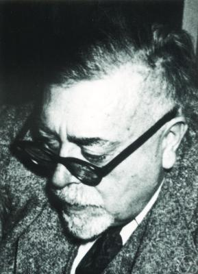

같은 1948년, MIT의 수학자 Norbert Wiener가 책 한 권을 냅니다 — 『Cybernetics: Or Control and Communication in the Animal and the Machine』.
핵심은 피드백 루프. 출력의 일부를 다시 입력으로 돌려, 기계가 자기 행동의 결과를 보고 다음을 고치게 합니다. 미사일 추적기·온도 조절기·심장박동 — 살아있는 것과 기계가 같은 회로 위에서 만났습니다.

Norbert Wiener (1894—1964)
Shannon이 신호를 측정했다면, Wiener는 신호를 되먹였습니다. 두 1948년이 — 1956년 다트머스의 두 다리.